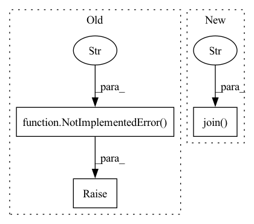

Pattern ID :14637
Before Change
logging.basicConfig(level=logging.INFO)
// TODO(sam): can implement this once rest of the pipeline works (doesn"t
// really have to be in initial PR)
raise NotImplementedError("still need to implement this" )
if __name__ == "__main__":
mkdataset_random_ex.run_commandline()After Change
logging.basicConfig(level=logging.INFO)
out_file_map = get_out_file_map()
out_file_path = os.path.join( out_file_map["random"], "random.tgz" )
venv = auto.load_vec_env()
policy = policy_base.RandomPolicy(venv.observation_space,
venv.action_space)In pattern: SUPERPATTERN
Frequency: 4
Non-data size: 3
Instances Fragment ID: 47989903
Project Name: humancompatibleai/eirli
Commit Name: 2d3520107ecb1690c1d5363feb93fe05bb937c63
Time: 2020-11-18
Author: sam@qxcv.net
File Name: src/il_representations/scripts/mkdataset_random.py
M Class Name: AnonimousClass
N Class Name: AnonimousClass
M Method Name: run(4)
N Method Name: run(4)
M Parent Class:
N Parent Class:
M File Name: src/il_representations/scripts/mkdataset_random.py
N File Name: src/il_representations/scripts/mkdataset_random.py
M Start Line: 32
M End Line: 32
N Start Line: 46
N End Line: 100
Before Change
// IMPLEMENT_THIS : Please define a `self.sampling_rate` for this pipeline
// to automatically read the input correctly
self.sampling_rate = 16000
raise NotImplementedError(
"Please implement AutomaticSpeechRecognitionPipeline __init__ function"
)
def __call__(self, inputs: np.array) -> Dict[str, str]:
Args:After Change
"pip",
"install",
"-r",
os.path.join( filepath, "requirements.txt" ) ,
]
)
Fragment ID: 47989904
Project Name: huggingface/huggingface_hub
Commit Name: 0ce8377367e9d07fca785d291b1f0665fc5bd51b
Time: 2021-07-16
Author: osanseviero@users.noreply.github.com
File Name: api-inference-community/docker_images/superb/app/pipelines/automatic_speech_recognition.py
M Class Name: AutomaticSpeechRecognitionPipeline
N Class Name: AutomaticSpeechRecognitionPipeline
M Method Name: __init__(2)
N Method Name: __init__(2)
M Parent Class: Pipeline
N Parent Class: Pipeline
M File Name: api-inference-community/docker_images/superb/app/pipelines/automatic_speech_recognition.py
N File Name: api-inference-community/docker_images/superb/app/pipelines/automatic_speech_recognition.py
M Start Line: 16
M End Line: 18
N Start Line: 19
N End Line: 35
Before Change
logging.basicConfig(level=logging.INFO)
// TODO(sam): can implement this once rest of the pipeline works (doesn"t
// really have to be in initial PR)
raise NotImplementedError("still need to implement this" )
if __name__ == "__main__":
mkdataset_random_ex.run_commandline()After Change
logging.basicConfig(level=logging.INFO)
out_file_map = get_out_file_map()
out_file_path = os.path.join( out_file_map["random"], "random.tgz" )
venv = auto.load_vec_env()
policy = policy_base.RandomPolicy(venv.observation_space,
venv.action_space) Fragment ID: 47989905
Project Name: humancompatibleai/eirli
Commit Name: 5b3487505b3eedf29518ec238a75520fc6d3fe04
Time: 2020-11-18
Author: sam@qxcv.net
File Name: src/il_representations/scripts/mkdataset_random.py
M Class Name: AnonimousClass
N Class Name: AnonimousClass
M Method Name: run(4)
N Method Name: run(4)
M Parent Class:
N Parent Class:
M File Name: src/il_representations/scripts/mkdataset_random.py
N File Name: src/il_representations/scripts/mkdataset_random.py
M Start Line: 32
M End Line: 32
N Start Line: 46
N End Line: 100
Before Change
class Pipeline(ABC):
@abstractmethod
def __init__(self, model_id: str):
raise NotImplementedError("Pipelines should implement an __init__ method" )
@abstractmethod
def __call__(self, inputs: Any) -> Any:
raise NotImplementedError("Pipelines should implement a __call__ method")After Change
"pip",
"install",
"-r",
os.path.join( filepath, "requirements.txt" ) ,
]
)
Fragment ID: 47989906
Project Name: huggingface/huggingface_hub
Commit Name: b165bb655f8470290807947ac879d215bb3b0d1f
Time: 2021-08-03
Author: osanseviero@users.noreply.github.com
File Name: api-inference-community/docker_images/generic/app/pipelines/base.py
M Class Name: Pipeline
N Class Name: Pipeline
M Method Name: __init__(2)
N Method Name: __init__(2)
M Parent Class: ABC
N Parent Class: ABC
M File Name: api-inference-community/docker_images/generic/app/pipelines/base.py
N File Name: api-inference-community/docker_images/generic/app/pipelines/base.py
M Start Line: 8
M End Line: 8
N Start Line: 13
N End Line: 29